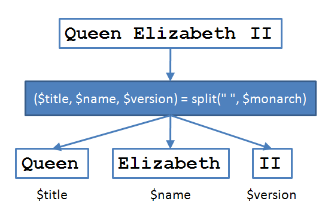
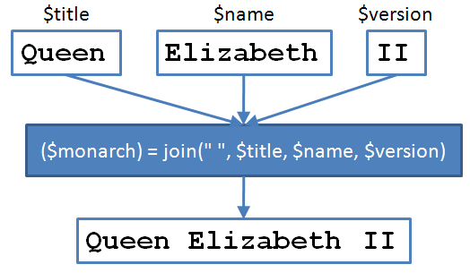

Lists and List Functions
AAHCClick on A to make all fonts on the page smaller.
Click on A to make all fonts on the page larger.
Click on HC to toggle high contrast mode. When you move your mouse over
some bold words in high contrast mode, related words are automatically highlighted. Text is shown
in black and white.
Lesson Objectives
When you complete this lesson, you will be able to:
- differentiate between lists and scalars.
- use various list functions.
"Enough organization, enough lists, and I think we can control the uncontrollable."
-John Mankiewicz
Most people run their lives using lists, like shopping lists, calendars, address books, even lists of
the lists they've made!
Lists
Perl has lists, too. You've been using them for a while. In this lesson, you're going to
get to know and understand them a lot better.
There's an important distinction to make about lists: they are not variables like scalars are.
Lists hold data, but they don't have names. You can store a list in a variable (not a scalar,
but a different kind of variable. We'll see how to do that in the next
lesson). But a list itself is an ordered set of scalar values flying around between
different parts of your program.
A list shows up in your program in these ways:
- When you assign something to a series of scalars between parentheses separated by commas:
($first_name, $middle_initial, $last_name) = ...
The set of scalars there is the list. Whatever is on the right side of the equals sign
will be expected to produce a list that can be assigned to those scalars.
- When you pass arguments to a function that expects a list (most of them do), like
print:
print $first_name, " ", $middle_initial, ". ",
$last_name;
The parentheses are optional in this case.
There's more to the whole notion of functions expecting a list, but for now let's keep building on the stuff we know.
(We have an entire lesson dedicated to the intricacies of lists later.)
We can declare more than one variable at a time in a list:
We can assign values to more than one variable at a time in a
list:
($x, $y, $z) = (17, 24,
42);
We can initialize (declare and assign at the same time) in a list:
my ($x, $y, $z) = (17, 24,
42);
The contents to the right side of the equals sign in the last two examples are also lists. They contain literal
elements—that's the technical term for the values specified at that point in the program, not coming from a
variable.
Let's check out an example to see what happens when the number of things on the
left side is different from the number of things right side of the equals sign. Create a new file called
list_test.plas shown:
CODE TO TYPE:
#!/usr/bin/perl
use strict;
use warnings;
my ($a, $b, $c, $d);
($a, $b) = (17, 24, 42); # Too few targets
print "\$a = $a, \$b = $b\n";
($a, $b, $c, $d) = (17, 24, 42); # Too many targets
print "\$a = $a, \$b = $b, \$c = $c, \$d = $d\n";
 and run it.
and run it.
INTERACTIVE TERMINAL SESSION:
cold:~$ cd perl1
cold:~/perl1$ ./list_test.pl
$a = 17, $b = 24
Use of uninitialized value $d in concatenation (.) or string at line 9.
$a = 17, $b = 24, $c = 42, $d =
cold:~/perl1$
What happened? Ponder and absorb.
split()
There are two functions that convert between a string and a list. Let's start with
split(). Create a file called store.pl as shown:
CODE TO TYPE:
#!/usr/bin/perl
use strict;
use warnings;
# Grocery store inventory:
my $lines = <<'END_OF_REPORT';
0.95 300 Peaches
1.45 120 Avocados
5.50 10 Durien
0.40 700 Apples
END_OF_REPORT
my ($line1, $line2, $line3, $line4) = split "\n", $lines;
my ($cost, $quantity, $item) = split " ", $line1;
print "Total value of $item on hand = \$", $cost * $quantity, "\n";
($cost, $quantity, $item) = split " ", $line2;
print "Total value of $item on hand = \$", $cost * $quantity, "\n";
($cost, $quantity, $item) = split " ", $line3;
print "Total value of $item on hand = \$", $cost * $quantity, "\n";
($cost, $quantity, $item) = split " ", $line4;
print "Total value of $item on hand = \$", $cost * $quantity, "\n";
and run it.
INTERACTIVE TERMINAL SESSION:
cold:~/perl1$ ./store.pl
Total value of Peaches on hand = $285
Total value of Avocados on hand = $174
Total value of Durien on hand = $55
Total value of Apples on hand = $280
cold:~/perl1$
split() works by splitting the second
argument wherever it sees an instance of the first argument, and returning the list
of strings that it finds.
(By the way, when I'm writing about a function, often I'll put parentheses after it like I just did, to help
you realize that I'm talking about a function. It doesn't mean anything about whether or not parentheses
are required - you'll see I used none in the code above.)
Here's a graphical representation:

The first argument—first a newline, then a space, in the above example—is not
included in the resulting strings. Instead, split() returns the things in
between. Also, split() does not modify the argument you pass it—even
though Perl programmers may refer to those strings as having been being split, the original string has not actually changed.
Also, when using split(), the string you use to execute a split
(the first argument) does not have to be a single character. If, however, that string is a
single space (like we used in our example above), then Perl will split its second argument wherever it sees any number of
consecutive spaces or tab characters as the string. That's the reason
splitting the grocery store lines on a single space worked, even though there were multiple
spaces between the items in the string.
Let's try one last example using split(); change store.pl as shown:
CODE TO TYPE:
#!/usr/bin/perl
use strict;
use warnings;
# Grocery store inventory:
my $lines = <<'END_OF_REPORT';
0.95 300 White Peaches
1.45 120 California Avocados
5.50 10 Durien
0.40 700 Spartan Apples
END_OF_REPORT
my ($line1, $line2, $line3, $line4) = split "\n", $lines;
my ($cost, $quantity, $item) = split " ", $line1;
print "Total value of $item on hand = \$", $cost * $quantity, "\n";
($cost, $quantity, $item) = split " ", $line2;
print "Total value of $item on hand = \$", $cost * $quantity, "\n";
($cost, $quantity, $item) = split " ", $line3;
print "Total value of $item on hand = \$", $cost * $quantity, "\n";
($cost, $quantity, $item) = split " ", $line4;
print "Total value of $item on hand = \$", $cost * $quantity, "\n";
and run it.
INTERACTIVE TERMINAL SESSION:
cold:~/perl1$ ./store.pl
Total value of White on hand = $285
Total value of California on hand = $174
Total value of Durien on hand = $55
Total value of Spartan on hand = $280
cold:~/perl1$
This output isn't very useful,
is it? Do you understand why you got it? (Hint: Take a look at the last example of lists you created.) So,
how can we fix it? There's a third, optional argument for split() that tells
Perl to stop splitting after it reaches a specified number of fields.
Modify store.pl again as shown:
CODE TO EDIT:
#!/usr/bin/perl
use strict;
use warnings;
# Grocery store inventory:
my $lines = <<'END_OF_REPORT';
0.95 300 White Peaches
1.45 120 California Avocados
5.50 10 Durien
0.40 700 Spartan Apples
END_OF_REPORT
my ($line1, $line2, $line3, $line4) = split "\n", $lines;
my ($cost, $quantity, $item) = split " ", $line1, 3;
print "Total value of $item on hand = \$", $cost * $quantity, "\n";
($cost, $quantity, $item) = split " ", $line2, 3;
print "Total value of $item on hand = \$", $cost * $quantity, "\n";
($cost, $quantity, $item) = split " ", $line3, 3;
print "Total value of $item on hand = \$", $cost * $quantity, "\n";
($cost, $quantity, $item) = split " ", $line4, 3;
print "Total value of $item on hand = \$", $cost * $quantity, "\n";
and run it.
INTERACTIVE TERMINAL SESSION:
cold:~/perl1$ ./store.pl
Total value of White Peaches on hand = $285
Total value of California Avocados on hand = $174
Total value of Durien on hand = $55
Total value of Spartan Apples on hand = $280
cold:~/perl1$
We cannot interpolate an expression inside a string and expect it to expand. Modify your code as shown:
CODE TO EDIT:
#!/usr/bin/perl
use strict;
use warnings;
# Grocery store inventory:
my $lines = <<'END_OF_REPORT';
0.95 300 White Peaches
1.45 120 California Avocados
5.50 10 Durien
0.40 700 Spartan Apples
END_OF_REPORT
my ($line1, $line2, $line3, $line4) = split "\n", $lines;
my ($cost, $quantity, $item) = split " ", $line1, 3;
print "Total value of $item on hand = \$", $cost * $quantity, "\n";
($cost, $quantity, $item) = split " ", $line2, 3;
print "Total value of $item on hand = \$", $cost * $quantity, "\n";
($cost, $quantity, $item) = split " ", $line3, 3;
print "Total value of $item on hand = \$", $cost * $quantity, "\n";
($cost, $quantity, $item) = split " ", $line4, 3;
print "Total value of $item on hand = \$", $cost * $quantity, "\n";
and run it.
See what happened?
Also note that once we have
declared a variable, we do not declare it again. Let's find out what
happens if we try adding my in front of any of the lines that assign to
the list ($cost, $quantity, $item). Modify your code as shown:
CODE TO EDIT:
#!/usr/bin/perl
use strict;
use warnings;
# Grocery store inventory:
my $lines = <<'END_OF_REPORT';
0.95 300 White Peaches
1.45 120 California Avocados
5.50 10 Durien
0.40 700 Spartan Apples
END_OF_REPORT
my ($line1, $line2, $line3, $line4) = split "\n", $lines;
my ($cost, $quantity, $item) = split " ", $line1, 3;
print "Total value of $item on hand = \$", $cost * $quantity, "\n";
my ($cost, $quantity, $item) = split " ", $line2, 3;
print "Total value of $item on hand = \$", $cost * $quantity, "\n";
($cost, $quantity, $item) = split " ", $line3, 3;
print "Total value of $item on hand = \$", $cost * $quantity, "\n";
($cost, $quantity, $item) = split " ", $line4, 3;
print "Total value of $item on hand = \$", $cost * $quantity, "\n";
and run it.
What error messages do you see?
(By the way, if you're a tad annoyed by the duplication of that code doing the same thing four
times, you should be! But let it go for now; we'll show
how to deal with that later in the course.)
join()
join() is the converse of split().
The first argument we'll join() is a string that Perl will place in
between each of the remaining arguments (if any of them are numbers, they'll be "stringified"
first), returning the resulting string. The joining string is not placed before the first argument,
or after the last argument, it is only in between arguments.
Here's a graphical representation:

Let's modify our grocery store example so that after it splits the lines, it subtracts some
sales and then prints out the result using join().
Create a file called store_join.pl as shown:
CODE TO TYPE:
#!/usr/bin/perl
use strict;
use warnings;
my $lines = <<'END_OF_REPORT';
0.95 300 White Peaches
1.45 120 California Avocados
5.50 10 Durien
0.40 700 Spartan Apples
END_OF_REPORT
my ($peaches_sold, $avocados_sold, $durien_sold, $apples_sold) = (12, 6, -1, 24); # One durien returned... too smelly
my ($line1, $line2, $line3, $line4) = split "\n", $lines;
my ($cost, $quantity, $item) = split " ", $line1, 3;
$quantity -= $peaches_sold;
$line1 = join " ", $cost, $quantity, $item;
print "$line1\n";
($cost, $quantity, $item) = split " ", $line2, 3;
$quantity -= $avocados_sold;
$line2 = join " ", $cost, $quantity, $item;
print "$line2\n";($cost, $quantity, $item) = split " ", $line3, 3;
$quantity -= $durien_sold;
$line3 = join " ", $cost, $quantity, $item;
print "$line3\n";
($cost, $quantity, $item) = split " ", $line4, 3;
$quantity -= $apples_sold;
$line4 = join " ", $cost, $quantity, $item;
print "$line4\n";
and run it.
INTERACTIVE TERMINAL SESSION:
cold:~/perl1$ ./store_join.pl
0.95 288 White Peaches
1.45 114 California Avocados
5.50 11 Durien
0.40 676 Spartan Apples
cold:~/perl1$
The lines that are produced aren't quite the same as the ones that
were entered. The numbers are different and there is only one space between each item,
because that's what we told join() to do.
Because that output can be parsed by the same program, the number of spaces usually doesn't
matter. If, however, some other (less tolerant) program expects the lines to be composed of
fixed-width fields, then we'd have a problem (one that we will learn to solve later).
Incidentally, a list can have zero or more things in it.
Here's what a list with nothing in it looks like:
()
And a list with only one thing in it looks like this:
("thing")
Binary Operator Shortcut
One final bit of instruction for you in this lesson—you see that -= in the program?
That's a handy Perl shortcut to use when you want to apply a binary operator (an operator that takes two
arguments, one on each side—like +, or *) and then have the variable on
the left side of the operator be assigned the result of the calculation; in other
words and code:
$variable OP= EXPRESSION
is the same as writing:
$variable = $variable OP EXPRESSION
where OP is any binary operator, and EXPRESSION is any expression. So:
$quantity -= $peaches_sold
is the same as:
$quantity = $quantity - $peaches_sold
This shortcut saves us time when programming and makes our code very readable.
Looking great so far! In the next lesson we'll learn about arrays! See you there!